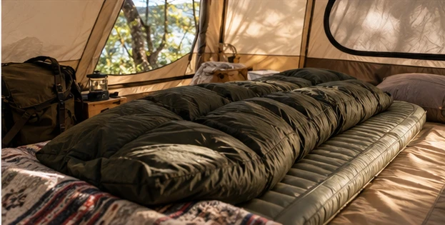

SOTOJITAKU CAMP / BEGINNER GUIDE
寝袋は、
季節と最低気温から。
見た目や価格より先に、使う日の気温とメーカーが示す温度情報を確認します。
寝袋は「春夏秋用」と書かれていても、快適に眠れる条件は製品ごとに違います。現地の最低気温を確認し、メーカーが示す快適使用温度などの仕様と照らして選ぶことが基本です。寒さの感じ方には個人差もあるため、ぎりぎりの条件で使わない余裕も大切です。
01 “快適に眠れる温度”の情報を見る
製品によって表記方法は異なります。快適使用温度、下限温度などの意味をメーカー説明で確認し、現地予報の最低気温と比較します。特に春と秋は昼夜の差が大きいことがあるため、昼間の気温だけで判断しません。
温度情報が不明な商品を、名前やレビューだけで春秋の主力寝袋として決めるのは避けた方が安全です。
02 マットも睡眠装備の一部
寝袋は身体の周囲を保温しますが、地面側では中綿がつぶれやすく、冷えや凹凸の影響を受けます。マットは寝心地だけでなく、地面との間をつくる役割があります。1泊では寝袋とマットをセットで考えます。
厚さだけでなく、収納サイズ・重量・空気の入れ方も確認すると設営や撤収が楽になります。
03 人数分の荷物量も確認する
家族4人なら寝袋とマットも基本的に人数分必要になり、収納容量は大きくなります。車の積載、自宅での保管、乾燥させる場所まで考えて選びます。
購入前に、付属収納袋に戻しやすいか、洗濯や手入れ方法はどうかもメーカー情報で確認すると長く使いやすくなります。
出発前のチェック
- キャンプ地の最低気温
- メーカーの快適使用温度等
- 人数分あるか
- マットとの組み合わせ
- 重量
- 収納サイズ
- 手入れ方法
- 濡れた場合の乾燥方法
気温に不安がある日は無理をしない装備選びだけで解決しようとせず、初心者は穏やかな季節・天候から始めるのがおすすめです。冬季や厳しい冷え込みは専門的な装備と経験が必要になります。
次に読む
MAKE YOUR CAMP
条件を選ぶと、必要なものが変わります。
7つの質問から、持ち物・買う/借りる・ごはん・予算・1日の流れまで、あなたのキャンプとして組み立てます。
SOTOJITAKU CAMPでつくる →